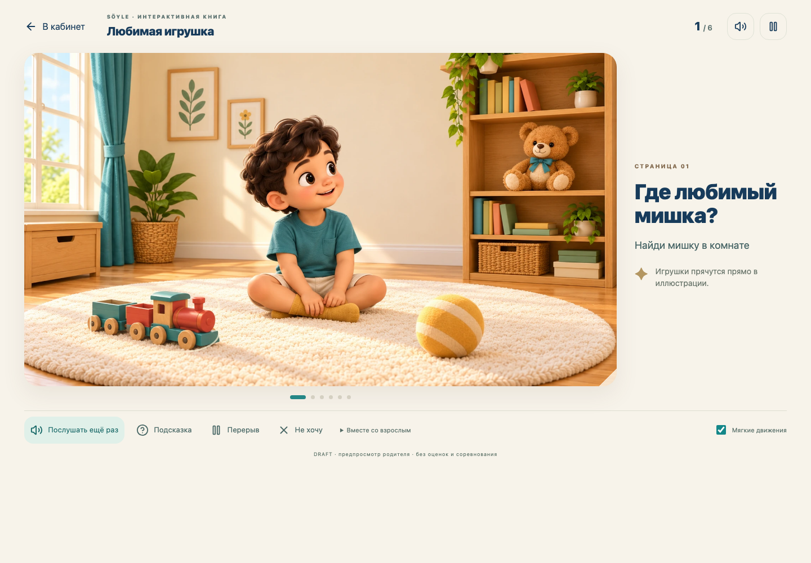
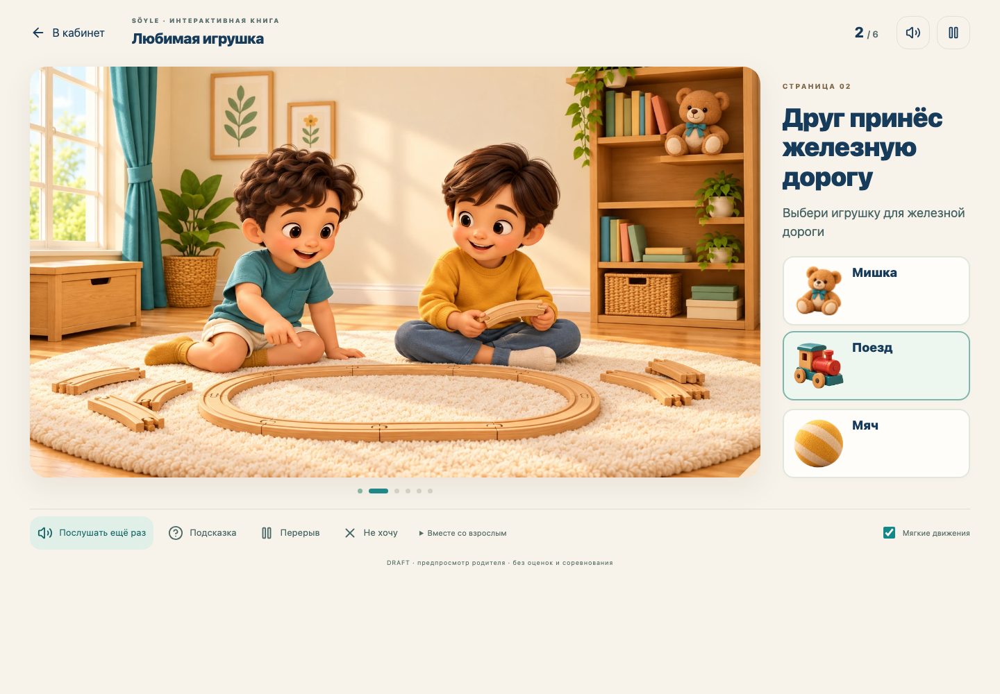
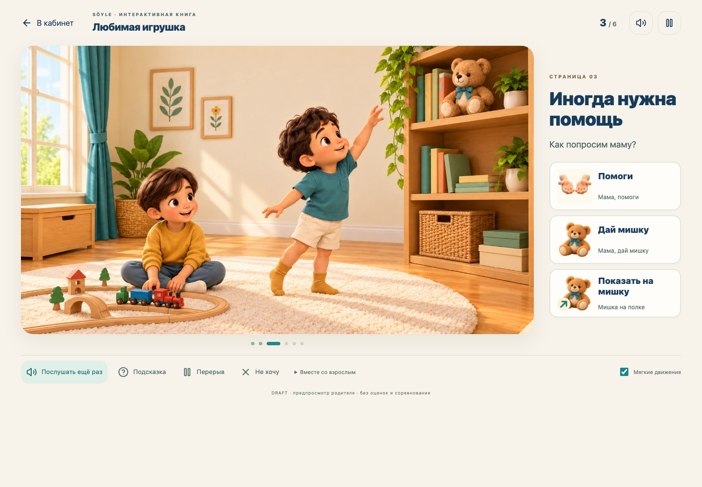
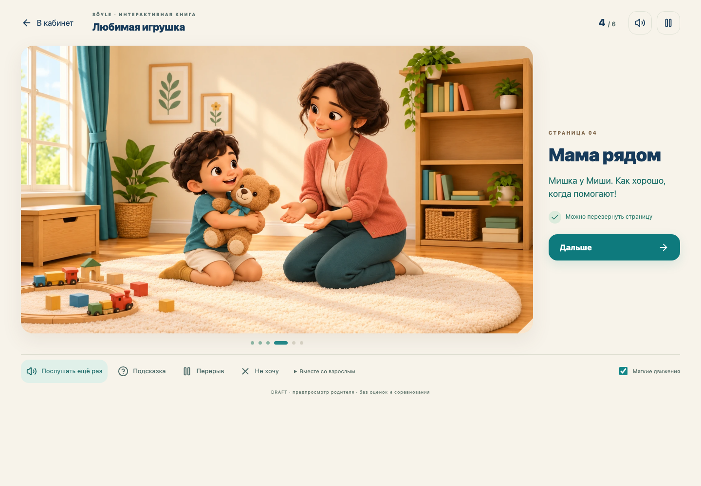
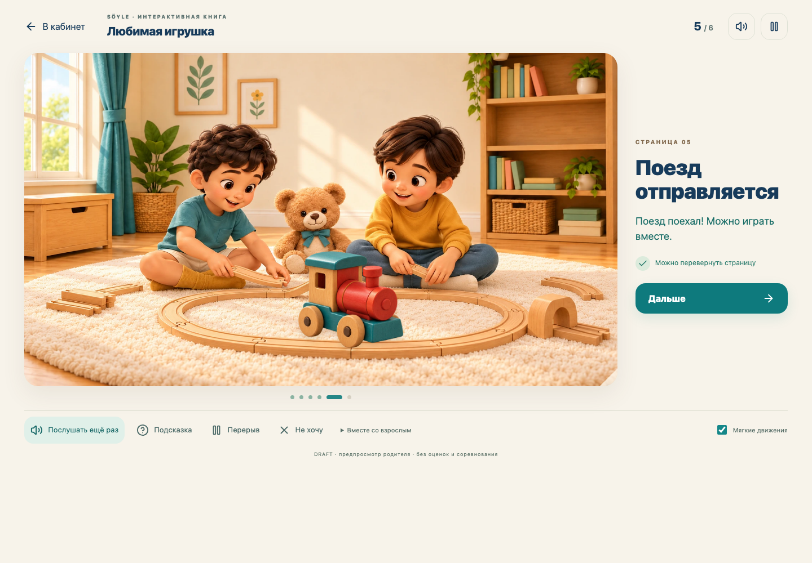
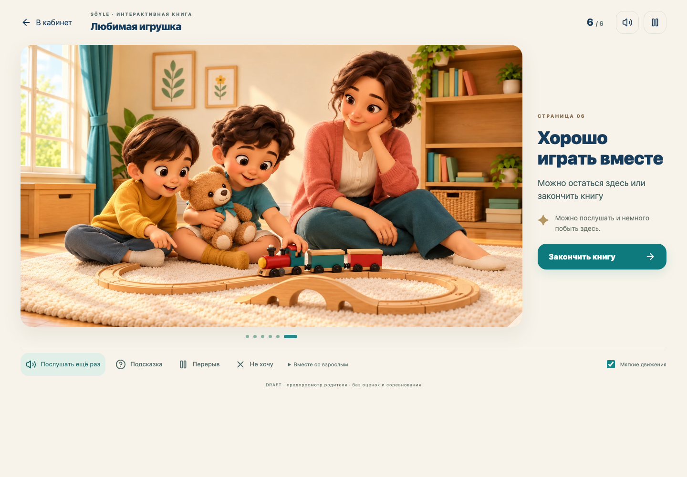
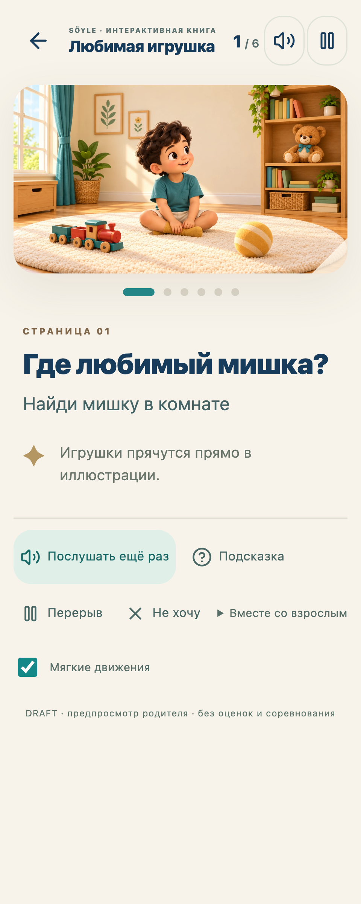
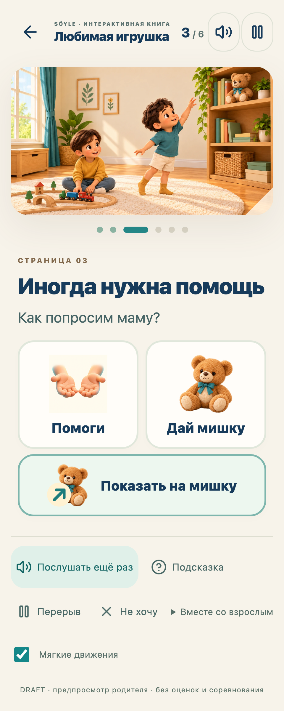

SÖYLE · INTERACTIVE STORYBOOK + MINI-GAMESЛюбимая игрушка
Новая интерактивная книга: шесть цельных иллюстраций, короткие голосовые подсказки и маленькие игры внутри сюжета. Персонажи остаются частью аккуратной композиции страницы.
Новая непрерывная запись работающего браузера, включая реальные нажатия, реакции и переходы. Видео без звука; локальные голосовые фразы подключены в приложении. Это предпросмотр DRAFT, публикация детям и обновление продакшена не выполнялись.
Что изменилось в плеереНа компьютере большая иллюстрация слева и компактное контекстное действие справа. На телефоне — целая сцена сверху и крупные карточки ниже. Общая навигация сайта скрыта, сохранены возврат, звук, страницы и пауза.
Мягкая живость вместо риговПлавное появление страниц, едва заметное приближение камеры, тёплый свет, подсветка находки, мягкая смена композиции при передаче мишки и перемещение поезда. Области нажатия неподвижны; reduced motion отключает движения.
Шесть страниц одной истории

01Где любимый мишка?Найти предмет в цельной иллюстрации; поезд и мяч дают спокойные подсказки.

02Друг принёс железную дорогуПодобрать игрушку для рельсов из трёх согласованных объёмных объектов.

03Иногда нужна помощьВыбрать AAC-просьбу или показать на мишку. Устный ответ не нужен.

04Мама рядомНажать на мишку: иллюстрация мягко меняется на получение и объятие.

05Поезд отправляетсяДва действия прямо на сцене: взять поезд и поставить на рельсы.

06Хорошо играть вместеСпокойное завершение с мамой, другом и любимой игрушкой.
Телефон · 320 px

Целая иллюстрация и крупная область поиска
Крупные карточки, touch и клавиатураКороткая озвучка
Подготовлена 21 локальная голосовая фраза: страницы, просьбы и доброжелательные реакции. Голос Milena, синтезированная демоозвучка; можно заменить утверждёнными записями. Повтор, отключение звука и отмена при паузе работают.
Где открытьРодитель → «Кабинет родителя» → «Любимая игрушка» → «Открыть книгу с играми». Новая книга открыта во встроенном браузере.
Проверено
65 backend и 54 frontend проверки. 8 браузерных проверок новой книги на desktop, tablet, mobile и 320 px: все шесть сцен, неправильный выбор с нейтральной реакцией, подсказки, передача мишки, последовательность с поездом, сохранение, отказ, возврат, помощь взрослого, клавиатура, reduced motion, axe и отсутствие горизонтальной прокрутки. После небольшой коррекции положения поезда повторно записан desktop-проход.
Ещё 7 проверок существующих функций прошли: свободные AAC-фразы, категория «Быт», загрузка нескольких фотографий, родительский кабинет, гайды и другие истории. 3 проверки в регрессионном наборе штатно пропущены для mobile согласно их настройкам. Производственная сборка проходит.
Ресурсы и устройство
Сценарий, отрисовка, мини-игры, звук и сохранение разделены. Плеер использует React, доступные DOM-кнопки и лёгкие CSS-переходы. Тяжёлая анимационная система в новой книге не загружается.
7 цельных иллюстраций (включая состояние после передачи) и прозрачный атлас игрушек созданы через image_gen. Промпты и уточнения. Сохранение версии 3 использует существующие авторизацию, профиль ребёнка и базу; старые прохождения не перезаписываются. Участие в книге не изменяет клинические оценки.
До публикации остаются методическая, AAC, художественная и аудиопроверка. Предпросмотр доступен родителю.